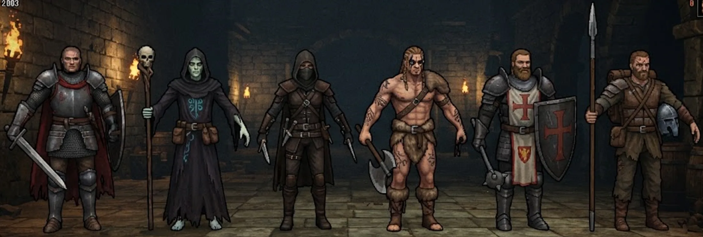
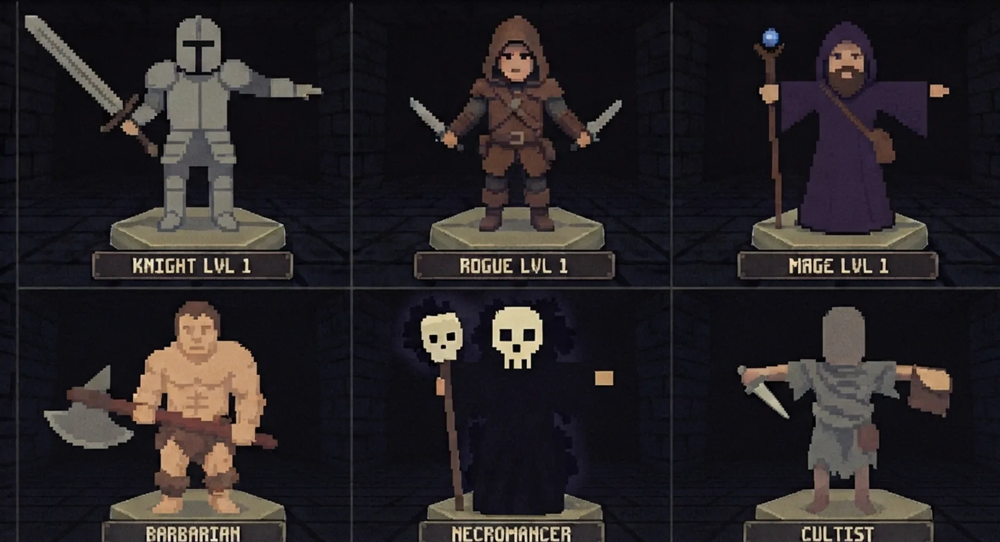
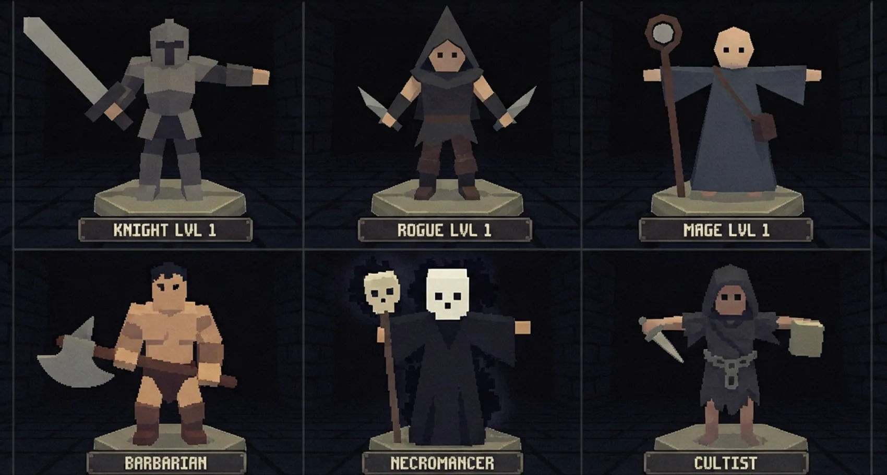
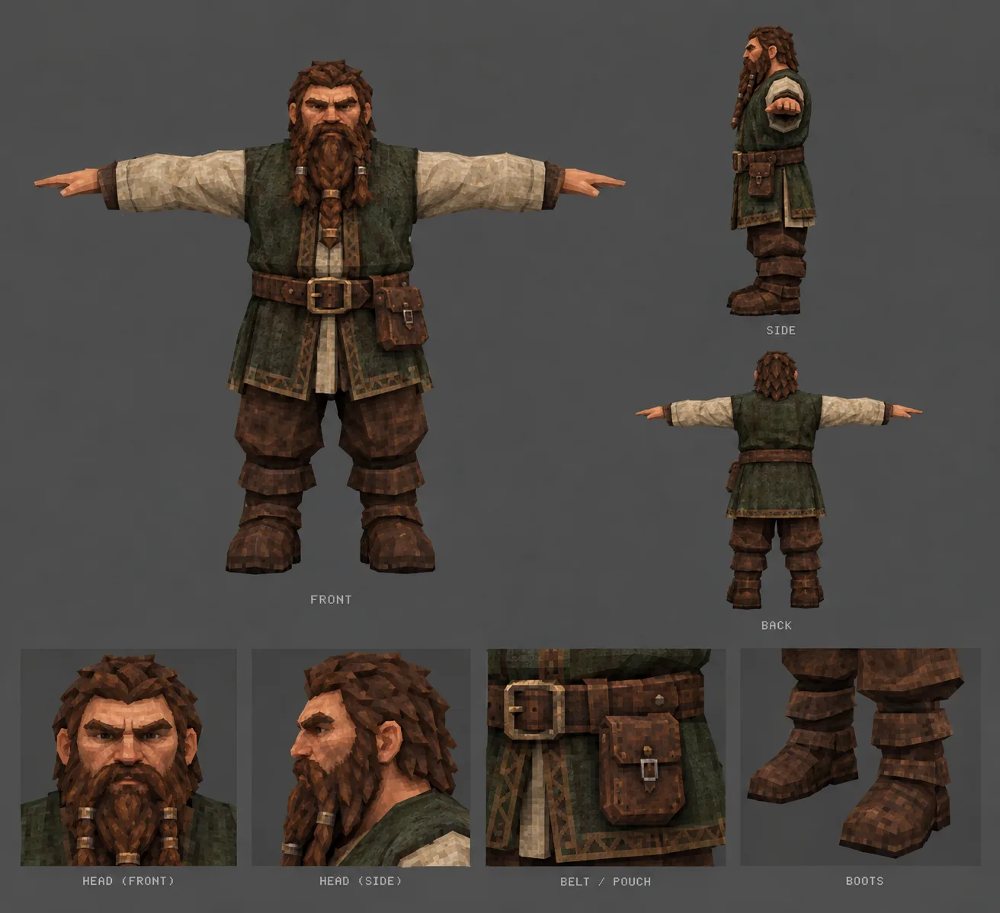
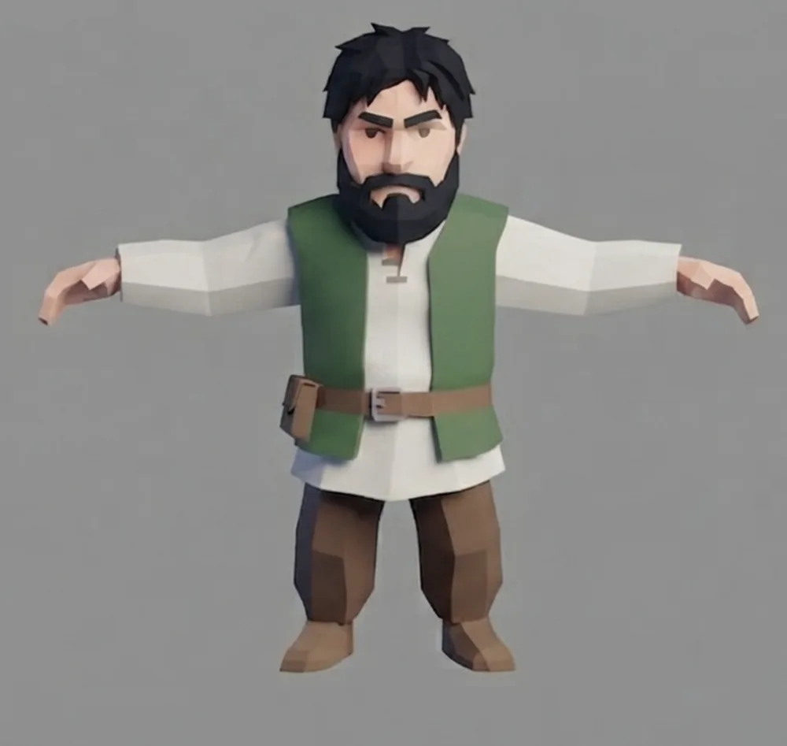
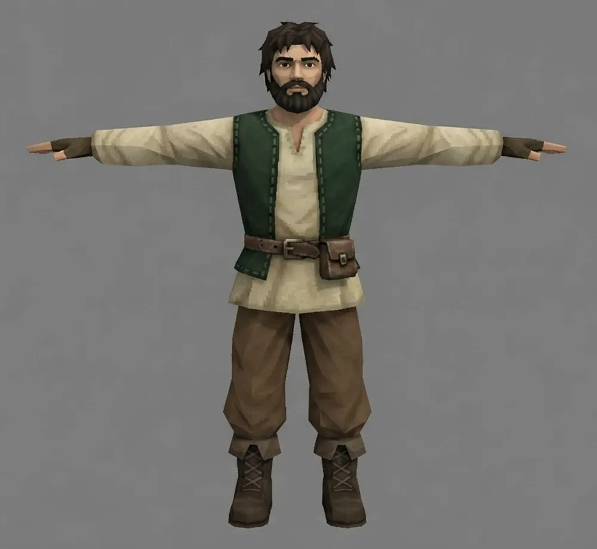
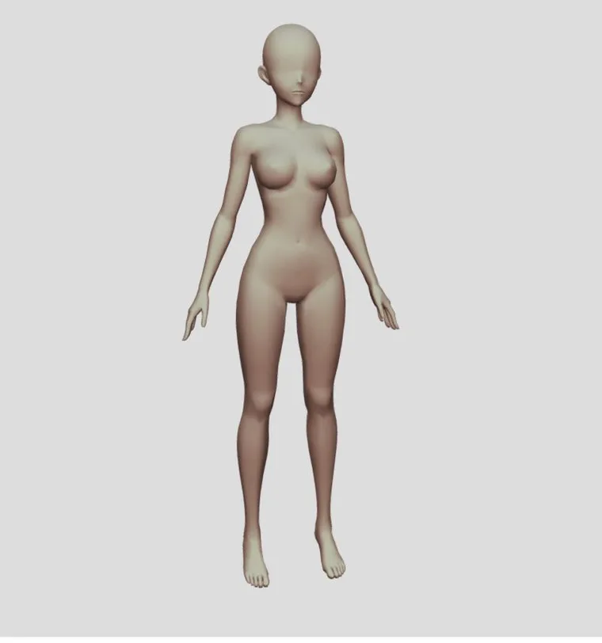
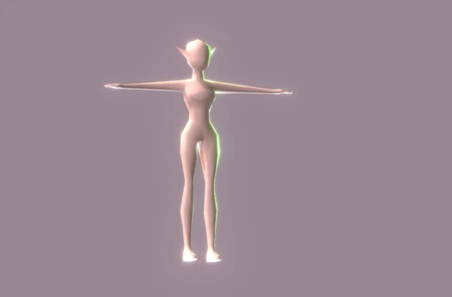

Зашёл со своим снаряжением. Набрал добычи. Вышел живым — или потерял всё.
Браузерная MMORPG от первого лица · в разработке
О чём игра
Grimhold открывается вкладкой браузера — ставить ничего не надо. Ты видишь мир своими глазами: руки, оружие, камень под ногами. Город внутри стен, дикие земли вокруг и люк на площади, ведущий вниз.
Всё, что делается наверху, делается ради того, что случится внизу. Там куют оружие, копят зелья и учатся драться. А потом спускаются — и ставят это на кон целиком.
Вылазка
Ты спускаешься в том, что надел. Не в выданном снаряжении, не с чекпойнта — в своём, заработанном. Если не вернёшься, надетое пропадёт насовсем.
Видно на несколько шагов, дальше глухо. Постоянного огня в подземелье нет — свет приносят с собой. Факел занимает руку, в которой мог быть щит, недолго горит и, главное, выдаёт тебя: твой огонь видят все, кто смотрит в твою сторону. Видеть и быть незаметным одновременно не выйдет.
Правила города туда не дотягиваются: там все всем враги, и встреча с человеком опаснее встречи с нежитью. Отличить спутника от чужака можно только по метке отряда — а решать, драться или разойтись, приходится за секунду.
Ничего не падает в рюкзак само. Сундук стоит вскрыть, и пока идёт работа, ты стоишь спиной к залу — уязвим и слышен. С убитого остаётся мешок на полу: подойди, открой, реши, что влезет. Место и вес конечны, и «взять это или то» — главный вопрос всей вылазки.
На дне ждёт хозяин глубины, и пока он жив, порталы заперты — никому, включая тех, кто уже набрал полные карманы и хочет уйти. Его смерть открывает выход всем сразу и ненадолго, и весь забег получает один и тот же сигнал. Дальше — гонка к одним и тем же дверям. Опоздавшему остаётся смерть.
Почему это работает
Общего уровня персонажа в игре нет. Растут навыки и вещи, а разрыв между тем, кто играет неделю, и тем, кто играет полгода, остаётся узким.
Это не скромность, а несущая конструкция. Будь разрыв как в обычной MMO, поход с полной потерей вещей стал бы бессмысленным с обеих сторон: новичку внизу ничего не светило бы, а ветерану нечего было бы бояться. А так — новичку есть что поймать, ветерану есть что потерять, и встреча в темноте остаётся разговором на равных.
И второе: вход всегда открыт. Люк стоит прямо на городской площади, а начальный набор выдают бесплатно. Потерявший всё спускается снова через минуту — неудача не должна закрывать игру.
Как это играется
Удар — не мгновенная вспышка, а движение с замахом. Замах видно, и в этом весь бой: противник успевает прочитать занос и решить — отойти, подставить щит или перебить своим быстрым ударом. Тяжёлый удар бьёт крепче, но и читается заметно раньше.
Силы конечны. Бег, удары, блок и рывок тратят дыхание, и оно возвращается только в паузе. Держать щит вечно нельзя, убежать от всего нельзя, а тот, кто выложился досуха, какое-то время едва переставляет ноги — и это самое уязвимое, чем можно быть.
Защищаться можно двумя способами, и они противоположны. Можно стоять под ударами за щитом, и чем больше стоишь, тем крепче держишь. Можно не попадать под них вовсе — уходить рывком, и чем чаще уходишь, тем короче откат и дешевле бросок. Щитовик и ловкач платят одну и ту же цену разными монетами.
Лук в руке превращает удар в выстрел, и стрела тратится в момент выстрела, а не при попадании — промах обязан чего-то стоить. Урон падает с расстоянием: на пределе лук только щиплет. Заклинания летят настоящим телом, а не мгновенным лучом: от быстрого сгустка можно отойти, а долгое заклинание наказывает за неподвижность.
Как растёт персонаж
Навыки растут от дела. Бьёшь мечом — растёт клинок, стреляешь — стрельба, колдуешь — магия. Какой именно навык растёт, решает вещь в руке, а не выбранный когда-то класс: взял кирку — качается дробящее. Промах ничему не учит, иначе выгодно было бы колотить воздух.
Защита учится тем же способом. Блок растёт от удара, действительно принятого щитом. А уклонение — не от самого рывка: рывок только открывает окно, и опыт приходит, если за это время ты достал врага. Уйти от настоящего удара и наказать за него — умение; прыгать в сторону рядом с крысой — привычка жать кнопку.
Вторая дорожка — только за победы. За них копится опыт персонажа, из него выходят очки, и каждое очко ты вкладываешь сам: в жизнь, в дыхание или в ману. Навык — это умение, выбирать там нечего. Очко — это выбор, каким ты хочешь быть, и он должен быть редким, чтобы что-то значить.
Мир наверху
Раса — это тело и руки, класс — подготовка, и выбираются они независимо. Простые вещи делает кто угодно и где угодно, но выше начинается расовое ремесло: чужой рецепт прочесть нельзя.
Начинаешь с пустыми руками: ни топора, ни кирки. Сухая ветка, расколотый камень и волокно с куста берутся голыми руками — из них вяжется первый инструмент, и уже он открывает дерево, руду и травы. Инструмент при этом нужен в руке, а не в рюкзаке: рука занята киркой, а не мечом, и встреча с волком по дороге к жиле становится решением.
Над городом ходит солнце, и ночь наступает у всех одновременно. К темноте зажигаются уличные огни и окна — и ночью за воротами становится по-настоящему неуютно. А в самом городе драться нельзя: это единственное место, где можно стоять спиной к человеку.
За воротами можно. Кто первым поднял руку на мирного — виден всем, и его можно бить без последствий; кто убивает мирных — виден ещё дальше и платит дольше. Убитое зверьё эту вину понемногу замаливает. Внизу все эти правила отключаются разом.
Как мы это видим
Это не скриншоты игры, а то, к чему она идёт: силуэты, палитра и настроение, по которым делается всё остальное.







Пайплайн
Порядок один и для персонажа, и для мира: сперва грубо и играбельно, потом красиво. Коробки в игре появляются раньше моделей, и пока картинка не поспела, играть уже можно.
Всё, что не нарисовано своими руками, берётся из источников с лицензией CC0 — то есть без обязательств и без чужих прав в проекте. Купленные паки из магазинов движков не годятся: их нельзя раздавать вместе с игрой.
Движение, столкновения и генерация мира написаны один раз и выполняются с обеих сторон. Сервер решает всё — клиент только предугадывает своё движение, чтобы оно не ждало ответа по сети. Разъехаться им нельзя: считают они по одним и тем же числам.
Кроме обычных тестов есть роботы: они заходят на живой сервер, ходят ногами, рубят деревья, вскрывают сундуки, спускаются на второй этаж и умирают от нежити. Что видно только глазами — картинку, свет, дрожание — смотрит человек, и это записано честно: такие вещи тестами не ловятся.
Статус
Играбельно целиком: можно зарегистрироваться, выйти в мир, добыть, сделать, подраться, спуститься и не вернуться. Шесть вех из семи закрыты.
Дорога